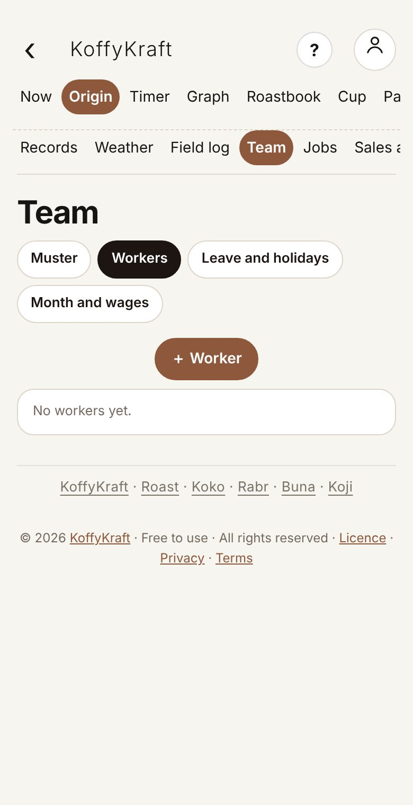
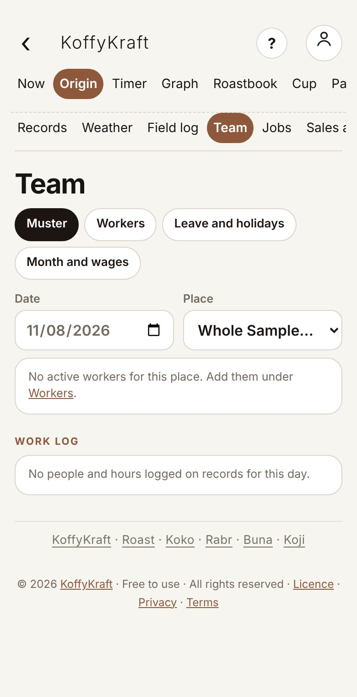
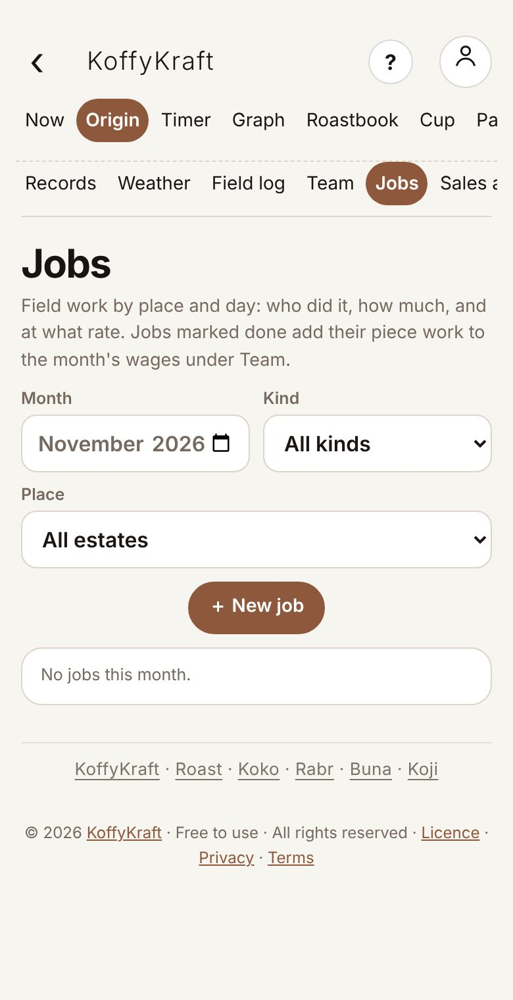
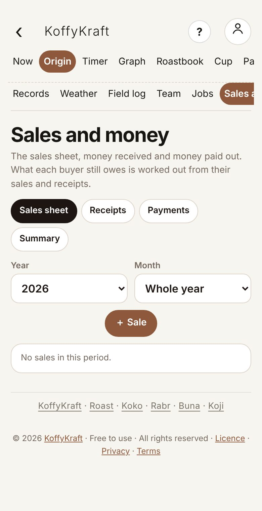
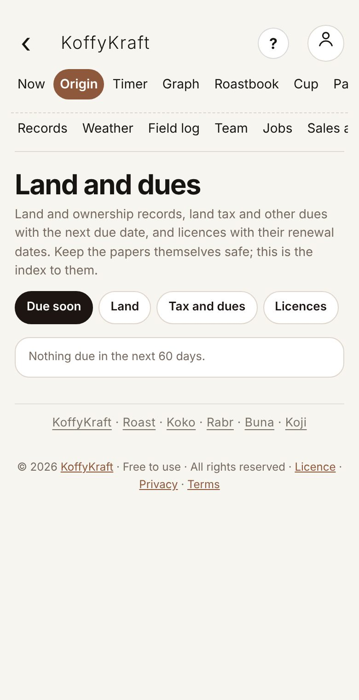
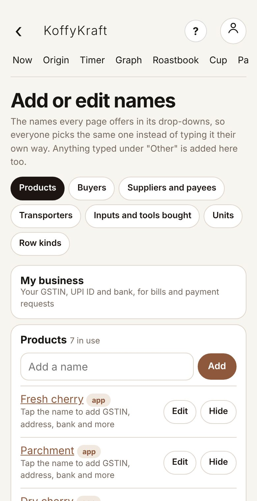

What it is
These pages keep their records in your account, so every phone you sign in on sees the same list. Without an account they ask you to sign in. Entries made with no signal wait on the phone and are sent when it is back online.
Business · People, work, sales, land
The people who work with you, the work they do, what you sell and are paid, the land papers and dues, and the names every form picks from.
What it is
These pages keep their records in your account, so every phone you sign in on sees the same list. Without an account they ask you to sign in. Entries made with no signal wait on the phone and are sent when it is back online.
What it is
Records show who entered something, so it can be trusted or corrected. Nothing here rates or ranks anyone's work.
Also inRecords you can trust
Step 1 · Add a worker
Open Team, then Workers, and tap + Worker. Give the name, role, how they are paid (by the day, month, hour or piece) and the rate. More details holds the address, an emergency contact, how wages are paid, skills and task.

Also inGetting set up
Step 2 · Take the daily muster
On Muster, pick the Date and Place, then tap P, H, A, L or O for each worker and save. The phone's GPS is kept with the muster. Hourly workers get their hours under Hours, overtime and notes.

Also inRecords you can trust
Watch out
A changed mark or pay rate asks for a reason, and the old one is kept in the log beside it.
Also inRecords you can trust
Step 3 · Work out the month's wages
Month and wages adds up days, overtime, piece work from Field jobs, advances and the net pay, ready to print. Leave and holidays keeps leave, holidays and bonuses.
Also inKilos carry forward
Step 4 · Record work done by the piece
Open Jobs and tap ＋ New job: the date, the kind of work (picking, weeding, pruning and more) and the place. Pay by quantity, days, hours or a fixed sum; the rate last used for that work fills in. Put each worker's quantity and save. Mark the job done to send it to the month's wages.

Also inKilos carry forward
Step 5 · Record a sale
Open Sales and money and tap ＋ Sale. Pick the buyer and product from your lists, the quantity and the rate; the amount works itself out. A green lot can fill it. The buyer's GSTIN and credit days show, and the payment due date fills in. Dispatch, inside the sale, keeps the transporter, vehicle, e-way bill, freight and dates.

Step 6 · Ask to be paid
Open a saved sale and tap Ask for payment: a message with the amount, due date and your bank, and a UPI QR the buyer scans, sent by WhatsApp or the share sheet.
Also inRecords you can trust
Step 7 · See who owes what
Receipts is money in from buyers; Payments is money out (a supplier with a UPI ID gets a Pay by UPI link). Summary shows payments due and late, totals for each month, and what each buyer owes. Export to CSV for your accountant.

Also inKilos carry forward
Step 8 · Keep land papers and dues
Open Land and dues. Land keeps each land record (survey number, area, ownership, documents). Tax and dues keeps land tax, insurance and loans with the next due date; record each payment when it is made. Licences keeps renewal dates. Due soon lists what falls due in the next 60 days.

Step 9 · Add or edit the names forms offer
Open Add or edit names (from Home or Account). Each list, such as Products, Buyers, Suppliers and payees, Transporters, Units and Row kinds, holds the names every drop-down offers, so everyone picks the same name. Add a name and Add; Edit renames, Hide takes it off the lists. A name typed under "Other" joins the list on its own.

Step 10 · Put my business details on payment requests
At the top of the names lists, My business holds your own name, GSTIN, address, UPI ID and bank, used on payment requests. Tap a buyer, supplier or transporter to keep their GSTIN, address, phone, bank, UPI and credit days.
Also inGetting set up
Step 11 · Compare one coffee with others
Open Shared spaces (an account is needed). Give the space a Name, and optionally the Coffee (optional) everyone is using, and tap Create space. Invite people by email; each adds a copy of their own brews, roasts, cuppings or process runs, and everyone comments. The owner can turn on a read-only public link.